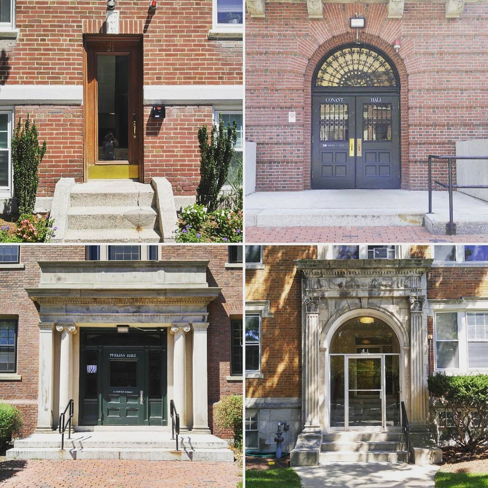
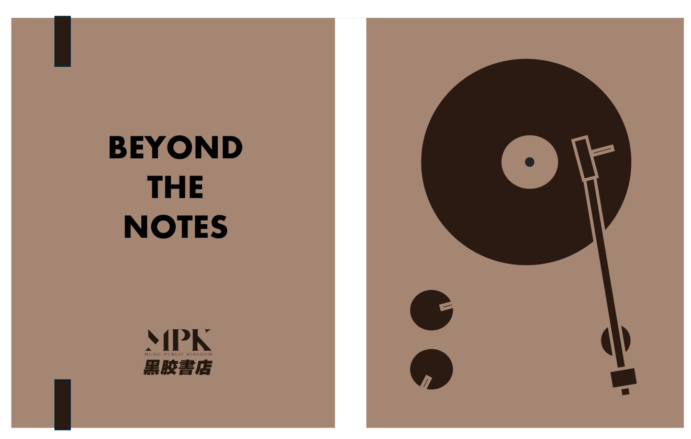

01

01 / ART PROJECTS
艺术项目
02 / HANDS-ON WORKSHOPS
动手工坊
从观看到动手。一起做一本本子，让光留下影子，走近胶片显影的过程。
03 / DESIGNED OBJECTS
文创作品
让一幅画、一段旅程，成为可以带进日常的物件。

01

02

从观看到动手。一起做一本本子，让光留下影子，走近胶片显影的过程。
让一幅画、一段旅程，成为可以带进日常的物件。
